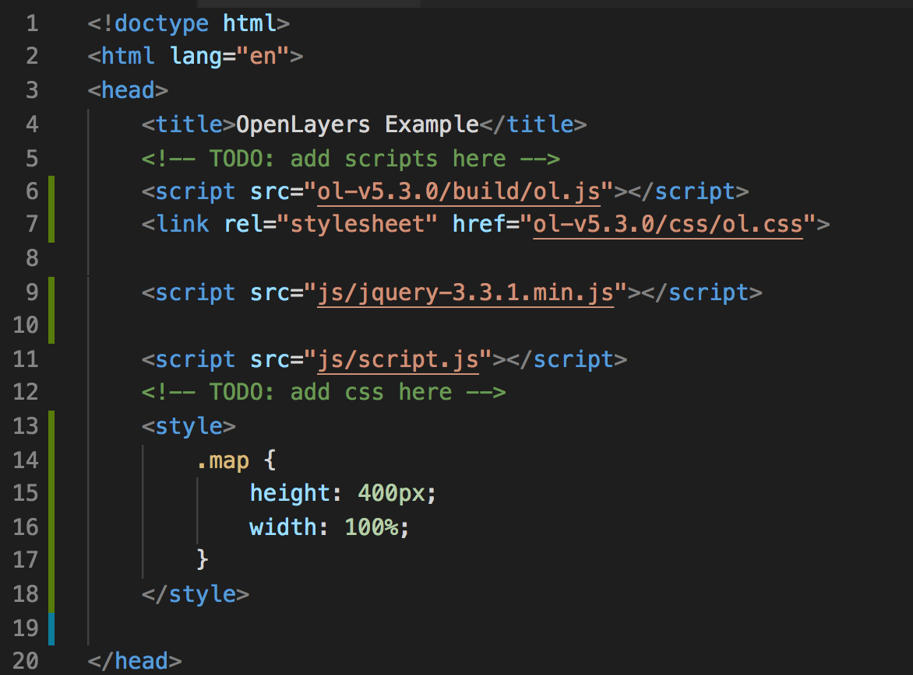

Walkthrough: OpenLayers and jQuery
Follow along with the instructor as we get started with jQuery and OpenLayers.
Review the code
index.html has a link to a script to js/script.jsindex.html has a <body> and <h2> but not much elsejs/script.js contains code to instantiate a mapjs/script.js defines stylesjs/script.js uses OpenLayers Tile layer Layer Types https://openlayers.org/en/v4.6.4/apidoc/ol.source.htmljs/script.js sets the map.view attribute which allows us to position the map at a certain lat long and zoom level using an ol.View object
Let’s make a map show up
Next, add OpenLayers to your project by including the JavaScript source in the head.
- OpenLayers is a JavaScript library that is used to show Maps, layers, and features
- The
ol.js files has alredy been downloaded. We need to add a link to it in our html
<script src="ol-v5.3.0/build/ol.js"></script>
<link rel="stylesheet" href="ol-v5.3.0/css/ol.css">
Add a link for JQuery JavaScript library
- We’ll use jQuery to make things like AJAX calls and DOM manipulation a bit easier.
- The
jquery-3.3.1.min.js files has alredy been downloaded. We need to add a link to it in our html
<script src="js/jquery-3.3.1.min.js"></script>
We need to create a <div> that will contain our Map
- This
div will be replaced with the contents of the rendered map.
- Add a
<div> inside of the <body>
<div id="mapPlaceholder" class="map"></div>
Then set the size for the map, by adding this to the <head>
<style>
.map {
height: 400px;
width: 100%;
}
</style>
What your code should look like

Let’s see it in action
Start a web server using python using one of the below commands.
- Open a terminal in the folder where you cloned the starter repo
- Check python version via:
- If Python version returned above is 3.X:
$ python -m http.server 7070
- If Python version returned above is 2.X:
$ python -m SimpleHTTPServer 7070
- In a browser go to
http://localhost:7070/index.html
- You should see a map that includes Germany.
Now show a list of airports
Add the following HTML to index.html
<button id="list-all-airports">list airports</button>
<ul id="airports"></ul>
We need to GET the data by making an AJAX request to http://localhost:7070/json/german_airports.geojson. For this we will use jQuery. Add
the below code to script.js. Then click the button and see what was logged in the console.
$('#list-all-airports').on('click', function() {
console.log('pulling data');
$('#airports').empty();
$.getJSON('http://localhost:7070/json/german_airports.geojson', {}).done(function(json) {
console.log(json);
});
});
Now let’s loop over the results and add each feature to the airport list. Edit the onclick handler to append a <li> for each feature returned.
$('#list-all-airports').on('click', function() {
console.log('pulling data');
$('#airports').empty();
$.getJSON('http://localhost:7070/json/german_airports.geojson', {}).done(function(json) {
for (var i=0; i<json.features.length; i++) {
$('#airports').append('<li>' + json.features[i].properties.dataField + '</li>');
}
});
});
Add Airport layer to the map
Paste this JS into js/script.js:
let vectorSource = new ol.source.Vector({
format: new ol.format.GeoJSON(),
url: 'http://localhost:7070/json/german_airports.geojson'
});
vectorLayer = new ol.layer.Vector({
source: vectorSource,
style: styleFunction
});
map.addLayer(vectorLayer);
Show Airports when a city is clicked
Let’s add a click handler to the map. First, let’s try it out in the console. Paste the following code in your browser’s dev tools console:
map.on('click', function(event) {
map.forEachFeatureAtPixel(event.pixel, function(feature, layer) {
console.log(feature);
});
});
- Now when you click on the map, it will print that feature to the console.
- Inspect the object to make sure it is what you expected. Next take a look at the documentation for ol.Feature https://openlayers.org/en/latest/apidoc/ol.Feature.html.
- How can you access the data on that object?
Try out the get() method on ol.Feature by pasting this into js/script.js. Click on the map and view results in your js console (in your brwoser’s dev tools).
map.on('click', function(event) {
map.forEachFeatureAtPixel(event.pixel, function(feature,layer) {
console.log(feature.get('dataField'));
});
});
We want to add data about this report to our map dashboard. Here is an example of what we want to show:
<ul id="airports">
<li>
<h3>Aalen-Heidenheim/Elchingen Airport</h3>
<p>ICAO: EPDA</p>
<p>Location: Aalen-heidenheim, Germany</p>
<p>Altitude: 1916</p>
<p>Time Zone: Europe/Berlin</p>
</li>
<li>
<h3>A Second Airpot in Clicked City</h3>
<p>ICAO2: EPDA2</p>
<p>Location: Aalen-heidenheimXYZ, Germany</p>
<p>Altitude: 1200</p>
<p>Time Zone: Europe/Berlin</p>
</li>
</ul>
For starters let’s add an empty <ul></ul> tag to our index.html file.
For the next feature we will need to use Javascript Template Literals. Template literals example below.
const name = 'Jasmine';
const = `Template literals start and end with ticks and you can includes variables like so. Hello ${name}.
You can include ' and " inside of the template literals. And you can break into multiple lines.
`;
Update the Map onclick code to display. For each feature at a certain pixel, we want to add that feature to the list below the map. OpenLayers will handle some of this work for us via map.forEachFeatureAtPixel(). Remember that the features in this case are airports and we are styling them to be displayed as red circles:
map.on('click', function(event) {
$('#airports').empty();
map.forEachFeatureAtPixel(event.pixel, function(feature,layer) {
$('#airports').append(`
<li>
<h3>${feature.get('locationType')}</h3>
<p>ICAO: ${feature.get('icao')}</p><p>Location: ${feature.get('dataField')}, ${feature.get('country')}</p>
<p>Altitude: ${feature.get('alt')}</p>
<p>Time Zone: ${feature.get('tz')}</p>
</li>`
);
});
});
Click on the city and be awed at your development skills.
Troubleshooting
Invalid JSON will cause the jQuery callback to not fire. If you are having an issue, validate the JSON that you are sending across the wire. Here is a JSON Validator https://jsonlint.com/.
Invalid GeoJSON will not show up on your map. You will see the data pull back, but you will not see any data displayed. Validate your GeoJSON. Here is a GeoJSON Validator http://geojson.io/o.
If you get the message The element type "link" must be terminated by the matching end-tag "</link>"., then add the following tag:
<html lang="en" xmlns:th="http://www.thymeleaf.org/">